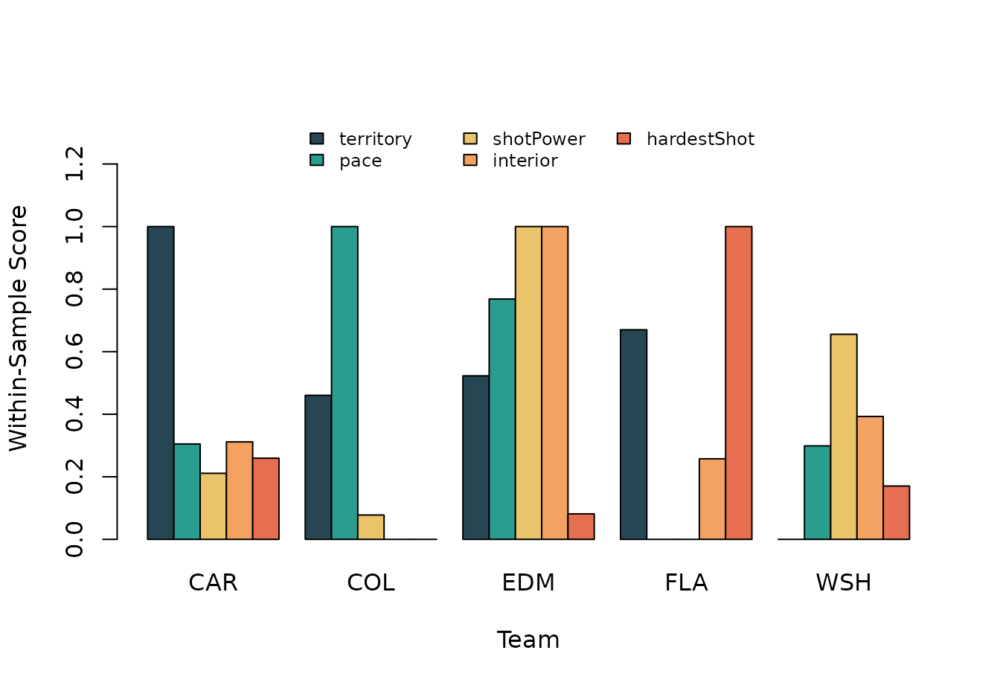
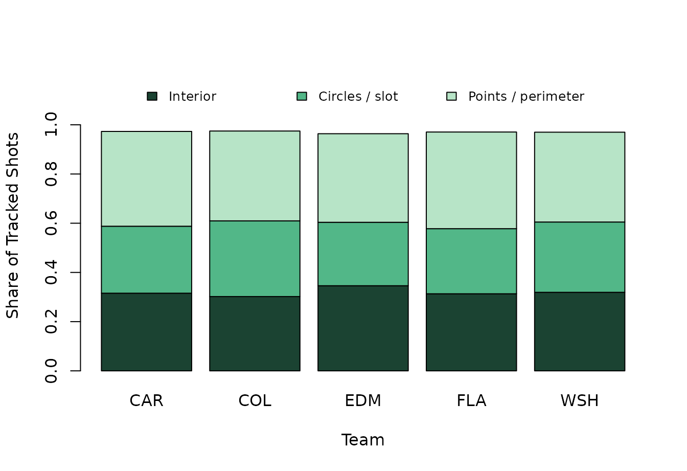

Do Elite Teams Build Offense the Same Way?
Source:vignettes/team-edge-archetypes.Rmd
team-edge-archetypes.RmdQuestion
“Good team” is not a style. Some good teams bury opponents in offensive-zone time. Some attack with speed. Some win with interior volume. Some create fear from the blue line and circles because every hard shot can become a rebound.
The NHL EDGE wrappers let us compare those styles directly. This article asks:
Do several elite 2024-25 teams manufacture offense in the same way, or do they have distinct tracking-data fingerprints?
We will compare five strong clubs:
- Carolina (
CAR) as the territorial-pressure candidate. - Colorado (
COL) as the pace candidate. - Edmonton (
EDM) as the dangerous-volume candidate. - Florida (
FLA) as the force/interior-pressure candidate. - Washington (
WSH) as the counterexample that won plenty without fitting every tracking stereotype.
League Leaders First
Before building profiles, look at a few league-leading team EDGE categories.
# Pull team EDGE leaders.
edge_leaders <- nhlscraper::team_edge_leaders(
season = 20242025,
game_type = 2
)
# Build compact leader table.
leader_table <- data.frame(
metric = c(
'Shots over 90 mph',
'Bursts over 22 mph',
'Distance per 60',
'High-danger shots on goal',
'Offensive-zone time',
'Neutral-zone time',
'Defensive-zone time'
),
team = c(
edge_leaders[['shotAttemptsOver90']][['team']][['abbrev']],
edge_leaders[['burstsOver22']][['team']][['abbrev']],
edge_leaders[['distancePer60']][['team']][['abbrev']],
edge_leaders[['highDangerSOG']][['team']][['abbrev']],
edge_leaders[['offensiveZoneTime']][['team']][['abbrev']],
edge_leaders[['neutralZoneTime']][['team']][['abbrev']],
edge_leaders[['defensiveZoneTime']][['team']][['abbrev']]
),
value = c(
as.character(edge_leaders[['shotAttemptsOver90']][['attempts']]),
as.character(edge_leaders[['burstsOver22']][['bursts']]),
sprintf('%.2f miles', edge_leaders[['distancePer60']][['distanceSkated']][['imperial']]),
as.character(edge_leaders[['highDangerSOG']][['sog']]),
sprintf('%.3f', edge_leaders[['offensiveZoneTime']][['zoneTime']]),
sprintf('%.3f', edge_leaders[['neutralZoneTime']][['zoneTime']]),
sprintf('%.3f', edge_leaders[['defensiveZoneTime']][['zoneTime']])
),
stringsAsFactors = FALSE
)
make_table(
leader_table,
caption = 'Selected 2024-25 team EDGE leaders.'
)| metric | team | value |
|---|---|---|
| Shots over 90 mph | EDM | 136 |
| Bursts over 22 mph | COL | 212 |
| Distance per 60 | FLA | 9.34 miles |
| High-danger shots on goal | EDM | 714 |
| Offensive-zone time | CAR | 0.461 |
| Neutral-zone time | DAL | 0.187 |
| Defensive-zone time | CAR | 0.355 |
The leader table is already a warning against one-size-fits-all thinking. The same team does not lead every tracking category.
Build Team Profiles
We will fetch four team-level views: zone time, skating speed, shot speed, and shot location. A few helper functions make the article more resilient when a nested EDGE response is temporarily incomplete.
# Define team set.
team_ids <- c(CAR = 12, COL = 21, EDM = 22, FLA = 13, WSH = 15)
# Define robust helpers.
fetch_with_retry <- function(fetch_fun, validator, tries = 3) {
for (i in seq_len(tries)) {
value <- try(fetch_fun(), silent = TRUE)
if (!inherits(value, 'try-error') && validator(value)) {
return(value)
}
Sys.sleep(i / 4)
}
NULL
}
valid_df <- function(x, required_cols) {
is.data.frame(x) && nrow(x) > 0 && all(required_cols %in% names(x))
}
safe_num <- function(x) {
out <- suppressWarnings(as.numeric(x))
ifelse(is.na(out), NA_real_, out)
}
safe_name <- function(first_name, last_name) {
if (
is.na(first_name) ||
is.na(last_name) ||
first_name == '' ||
last_name == ''
) {
return(NA_character_)
}
paste(first_name, last_name)
}
safe_summary_num <- function(x, path) {
value <- tryCatch({
for (nm in path) x <- x[[nm]]
x
}, error = function(e) NA_real_)
safe_num(value)
}
# Build one profile row.
build_team_profile <- function(team_code, team_id) {
team_summary <- fetch_with_retry(
function() nhlscraper::team_edge_summary(
team = team_id,
season = 20242025,
game_type = 2
),
function(x) is.list(x)
)
zone_rows <- fetch_with_retry(
function() nhlscraper::team_edge_zone_time(
team = team_id,
season = 20242025,
game_type = 2,
category = 'details'
),
function(x) valid_df(x, c('strengthCode', 'offensiveZonePctg'))
)
skating_rows <- fetch_with_retry(
function() nhlscraper::team_edge_skating_speed(
team = team_id,
season = 20242025,
game_type = 2,
category = 'details'
),
function(x) valid_df(x, c('positionCode', 'maxSkatingSpeed.imperial', 'burstsOver22.value'))
)
shot_speed_rows <- fetch_with_retry(
function() nhlscraper::team_edge_shot_speed(
team = team_id,
season = 20242025,
game_type = 2,
category = 'details'
),
function(x) valid_df(x, c('position', 'topShotSpeed.imperial', 'shotAttempts90To100.value'))
)
shot_location_rows <- fetch_with_retry(
function() nhlscraper::team_edge_shot_location(
team = team_id,
season = 20242025,
game_type = 2,
category = 'details'
),
function(x) valid_df(x, c('area', 'sog'))
)
if (
is.null(zone_rows) ||
is.null(skating_rows) ||
is.null(shot_speed_rows) ||
is.null(shot_location_rows)
) {
return(data.frame(
team = team_code,
points = safe_summary_num(team_summary, c('team', 'points')),
wins = safe_summary_num(team_summary, c('team', 'wins')),
offensiveZonePctg = NA_real_,
maxSkatingSpeed = NA_real_,
burstsOver22 = NA_real_,
shotAttemptsOver90 = NA_real_,
hardestShot = NA_real_,
trackedShots = NA_real_,
interiorShare = NA_real_,
circleShare = NA_real_,
pointShare = NA_real_,
fastestSkater = NA_character_,
hardestShooter = NA_character_,
stringsAsFactors = FALSE
))
}
zone_row <- zone_rows[zone_rows[['strengthCode']] == 'all', , drop = FALSE]
skating_row <- skating_rows[skating_rows[['positionCode']] == 'all', , drop = FALSE]
shot_speed_row <- shot_speed_rows[shot_speed_rows[['position']] == 'all', , drop = FALSE]
if (!nrow(zone_row)) zone_row <- zone_rows[1, , drop = FALSE]
if (!nrow(skating_row)) skating_row <- skating_rows[1, , drop = FALSE]
if (!nrow(shot_speed_row)) shot_speed_row <- shot_speed_rows[1, , drop = FALSE]
interior_mask <- shot_location_rows[['area']] %in% c(
'Crease',
'Low Slot',
'L Net Side',
'R Net Side'
)
circle_mask <- shot_location_rows[['area']] %in% c(
'High Slot',
'L Circle',
'R Circle'
)
point_mask <- shot_location_rows[['area']] %in% c(
'Center Point',
'L Point',
'R Point',
'Outside L',
'Outside R',
'Beyond Red Line'
)
total_shots <- sum(shot_location_rows[['sog']], na.rm = TRUE)
data.frame(
team = team_code,
points = safe_summary_num(team_summary, c('team', 'points')),
wins = safe_summary_num(team_summary, c('team', 'wins')),
offensiveZonePctg = safe_num(zone_row[['offensiveZonePctg']][1]),
maxSkatingSpeed = safe_num(skating_row[['maxSkatingSpeed.imperial']][1]),
burstsOver22 = safe_num(skating_row[['burstsOver22.value']][1]),
shotAttemptsOver90 = sum(
safe_num(shot_speed_row[['shotAttemptsOver100.value']][1]),
safe_num(shot_speed_row[['shotAttempts90To100.value']][1]),
na.rm = TRUE
),
hardestShot = safe_num(shot_speed_row[['topShotSpeed.imperial']][1]),
trackedShots = total_shots,
interiorShare = sum(shot_location_rows[['sog']][interior_mask], na.rm = TRUE) / total_shots,
circleShare = sum(shot_location_rows[['sog']][circle_mask], na.rm = TRUE) / total_shots,
pointShare = sum(shot_location_rows[['sog']][point_mask], na.rm = TRUE) / total_shots,
fastestSkater = safe_name(
skating_row[['maxSkatingSpeed.overlay.player.firstName.default']][1],
skating_row[['maxSkatingSpeed.overlay.player.lastName.default']][1]
),
hardestShooter = safe_name(
shot_speed_row[['topShotSpeed.overlay.player.firstName.default']][1],
shot_speed_row[['topShotSpeed.overlay.player.lastName.default']][1]
),
stringsAsFactors = FALSE
)
}
# Build profile table.
team_profiles <- Map(
build_team_profile,
team_code = names(team_ids),
team_id = unname(team_ids)
)
team_profiles <- do.call(rbind, team_profiles)
rownames(team_profiles) <- NULL
profile_table <- team_profiles[, c(
'team',
'points',
'wins',
'offensiveZonePctg',
'maxSkatingSpeed',
'burstsOver22',
'shotAttemptsOver90',
'hardestShot',
'interiorShare'
)]
make_table(
profile_table,
caption = 'Five-team 2024-25 EDGE profile comparison.',
digits = 3
)| team | points | wins | offensiveZonePctg | maxSkatingSpeed | burstsOver22 | shotAttemptsOver90 | hardestShot | interiorShare |
|---|---|---|---|---|---|---|---|---|
| CAR | 99 | 47 | 0.461 | 24.491 | 98 | 65 | 100.14 | 0.316 |
| COL | 102 | 49 | 0.425 | 24.817 | 212 | 53 | 98.42 | 0.302 |
| EDM | 101 | 48 | 0.429 | 24.359 | 174 | 136 | 98.96 | 0.346 |
| FLA | 98 | 47 | 0.439 | 23.415 | 48 | 46 | 105.05 | 0.313 |
| WSH | 111 | 51 | 0.395 | 23.341 | 97 | 105 | 99.55 | 0.319 |
Build an Archetype Scorecard
Raw metrics have different scales, so a quick within-sample rescale
makes the profiles easier to compare. A score of 1 means
best among these five teams; a score of 0 means lowest
among these five teams.
# Rescale profile metrics within sample.
rescale01 <- function(x) {
rng <- range(x, na.rm = TRUE)
if (!all(is.finite(rng)) || diff(rng) == 0) {
return(rep(NA_real_, length(x)))
}
(x - rng[1]) / diff(rng)
}
scorecard <- data.frame(
team = team_profiles[['team']],
territory = rescale01(team_profiles[['offensiveZonePctg']]),
pace = rescale01(team_profiles[['burstsOver22']]),
shotPower = rescale01(team_profiles[['shotAttemptsOver90']]),
interior = rescale01(team_profiles[['interiorShare']]),
hardestShot = rescale01(team_profiles[['hardestShot']]),
stringsAsFactors = FALSE
)
make_table(
scorecard,
caption = 'Within-sample EDGE archetype scores.',
digits = 3
)| team | territory | pace | shotPower | interior | hardestShot |
|---|---|---|---|---|---|
| CAR | 1.000 | 0.305 | 0.211 | 0.312 | 0.259 |
| COL | 0.460 | 1.000 | 0.078 | 0.000 | 0.000 |
| EDM | 0.523 | 0.768 | 1.000 | 1.000 | 0.081 |
| FLA | 0.670 | 0.000 | 0.000 | 0.258 | 1.000 |
| WSH | 0.000 | 0.299 | 0.656 | 0.393 | 0.170 |
# Plot archetype scorecard.
score_matrix <- t(as.matrix(scorecard[, -1]))
colnames(score_matrix) <- scorecard[['team']]
graphics::barplot(
score_matrix,
beside = TRUE,
col = c('#264653', '#2a9d8f', '#e9c46a', '#f4a261', '#e76f51'),
ylim = c(0, 1.35),
ylab = 'Within-Sample Score',
xlab = 'Team'
)
graphics::legend(
'top',
legend = rownames(score_matrix),
fill = c('#264653', '#2a9d8f', '#e9c46a', '#f4a261', '#e76f51'),
bty = 'n',
cex = 0.75,
ncol = 3
)
Within-sample archetype scorecard for five teams.
This is the article’s main picture. Carolina’s offense looks territorial. Colorado’s looks fast. Florida’s profile carries shot-power and interior pressure. Edmonton brings the dangerous-volume flavor. Washington is the useful reminder that winning teams do not have to max out every tracking trait.
Shot Geography
Shot mix gives the scorecard some texture. Interior share is not the same thing as total offense; it is the shape of the tracked attempts.
# Plot shot-location mix.
shot_mix <- t(as.matrix(team_profiles[, c(
'interiorShare',
'circleShare',
'pointShare'
)]))
colnames(shot_mix) <- team_profiles[['team']]
rownames(shot_mix) <- c('Interior', 'Circles / slot', 'Points / perimeter')
graphics::barplot(
shot_mix,
beside = FALSE,
col = c('#1b4332', '#52b788', '#b7e4c7'),
ylim = c(0, 1.18),
ylab = 'Share of Tracked Shots',
xlab = 'Team'
)
graphics::legend(
'top',
legend = rownames(shot_mix),
fill = c('#1b4332', '#52b788', '#b7e4c7'),
bty = 'n',
cex = 0.8,
horiz = TRUE
)
Tracked shot-location mix by team.
The shot mix keeps the style comparison grounded. A team can be fast without living at the net front. A team can own territory without having the hardest shot profile. The categories overlap, but they do not collapse into one generic “good offense” number.
Put Names Back on Traits
Tracking data become more interesting when team traits are tied back to players.
# Show players behind extreme traits.
player_table <- team_profiles[, c(
'team',
'fastestSkater',
'maxSkatingSpeed',
'hardestShooter',
'hardestShot'
)]
make_table(
player_table,
caption = 'Players behind each team profile.'
)| team | fastestSkater | maxSkatingSpeed | hardestShooter | hardestShot |
|---|---|---|---|---|
| CAR | Martin Necas | 24.491 | Dmitry Orlov | 100.14 |
| COL | Miles Wood | 24.817 | Cale Makar | 98.42 |
| EDM | Mattias Janmark | 24.359 | Viktor Arvidsson | 98.96 |
| FLA | Carter Verhaeghe | 23.415 | Gustav Forsling | 105.05 |
| WSH | Martin Fehérváry | 23.341 | John Carlson | 99.55 |
This is why the EDGE wrappers are useful beyond leaderboards. They let you move from team identity to the players who create that identity without leaving R.
What We Learned
Elite offense is plural. Carolina can look elite through zone-time dominance. Colorado can look elite through pace. Florida can look elite through force and interior pressure. Edmonton can look elite through dangerous-volume traits. Washington can win enough to belong in the conversation while reminding us that the cleanest tracking profile is not the only path to results.
That is the broader nhlscraper lesson: the NHL EDGE
endpoints are not just novel leaderboards. They are style data. Once
scraped into tables, they let you ask whether teams that land near each
other in the standings actually play the same sport in the same way.